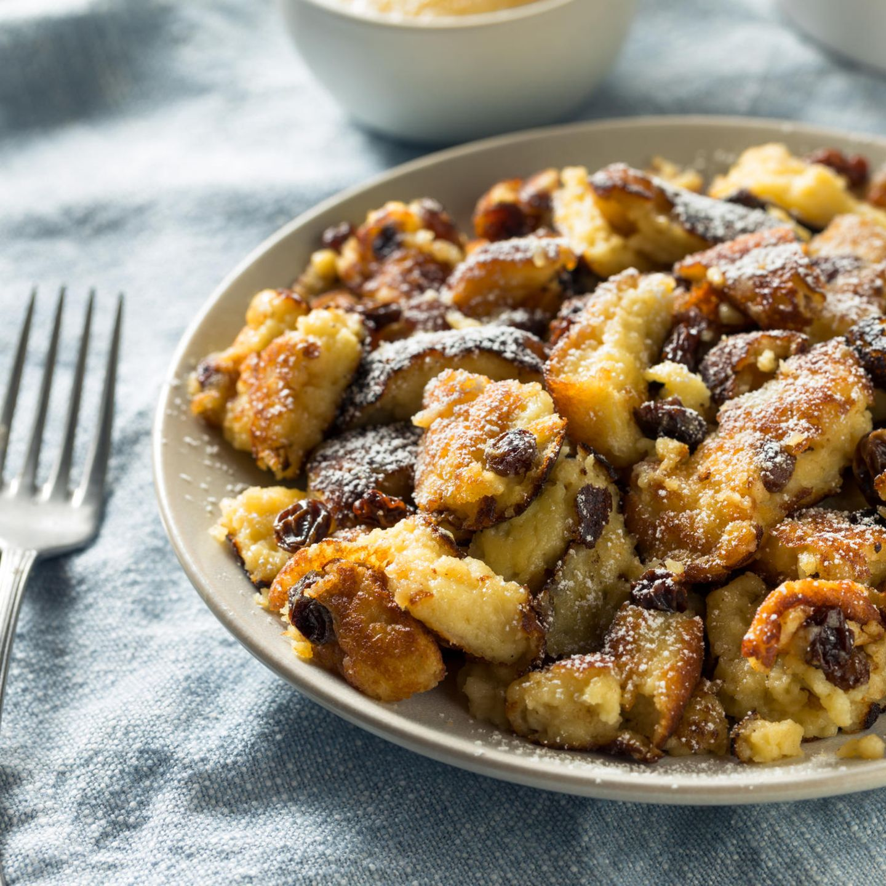

Kaiserschmarrn

This is a recipe of my dear friend.
Ingredients
- Eggs 5
- Milk 125 ml
- Flour 125 g
- Salt 1 pinch
- Raisins 3 tablespoons
- Sugar 1 tablespoon
- Butter 25 g
- Powdered sugar according to taste
- Compote or apple purée according to taste
Steps
- Seperate the egg whites from the yolks.
- Mix the flour, milk and sugar with a pinch of salt.
- Stirr in the yolks and raisins.
- Beat the egg whites until stiff.
- Gently fold the stiff egg whites into the yolk mixture to make the dough.
- Heat up the butter in a pan and fill the dough into the pan. Take care to not add too much heat or it will burn!
- After 1 to 2 minutes, cut the dough with a spatula in smaller pieces to turn them around and cook them until the underside has a nice colour.
- Now chop the pieces into smaller pieces.
- Serve it and add some powdered sugar on top. Tastes best with some compote or apple purée!